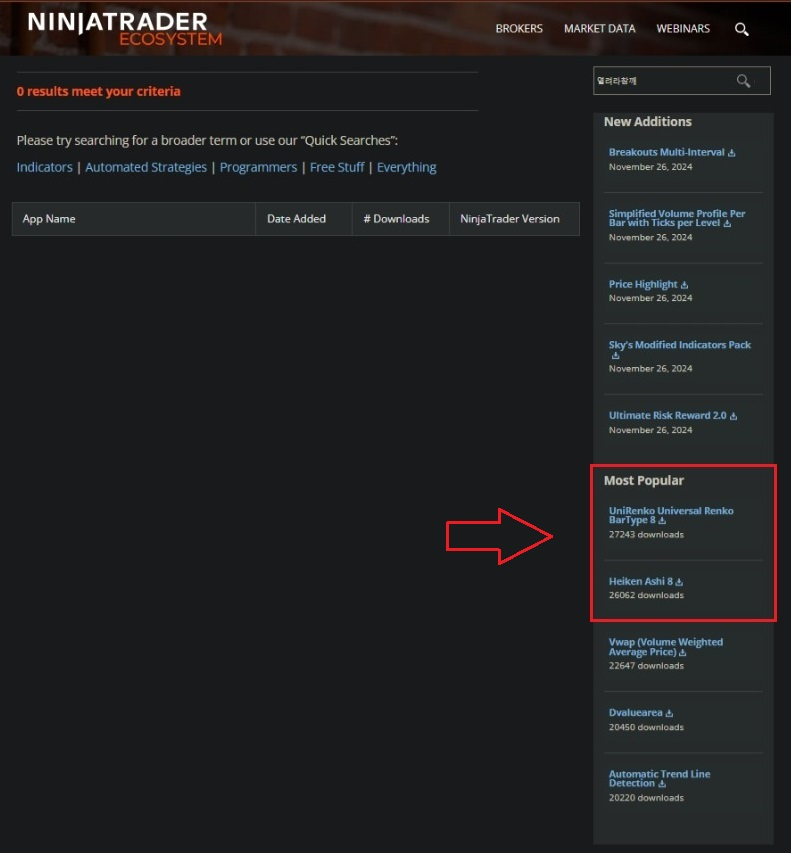

유니렌코(UniRenko) & 하이킨아시(HeikinAshi) 시스템은 알음알음으로 전해지던 매매차트인데
언제부터인가 아래 "Most Popular"에서 내려갈줄 모르고 있다
유니렌코(UniRenko) 차트는 닌자트레이더(NinjaTrader)에서만 가능하다
작은 Whipsaw를 걸러주기 때문에 매매에 큰 무기가 된다
설치는 "제어센터 -> 도구 -> 불러오기 -> NinjaScript 애드온"에서 다운받은 zip 파일을 불러오면 된다.
https://ninjatraderecosystem.com/user-app-share-results/?fwp_usa_search=열려라참깨
